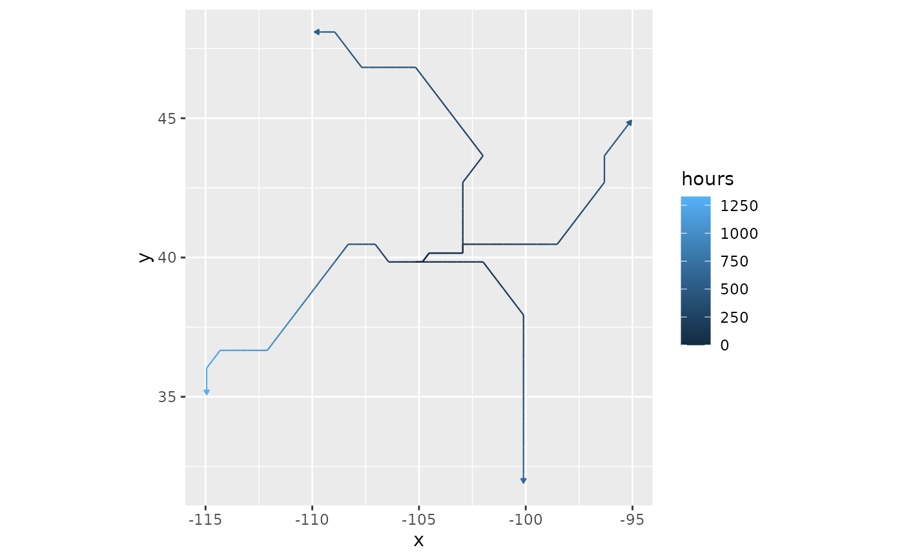
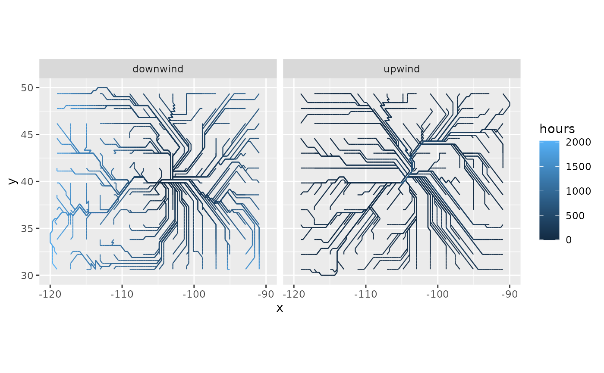

Least-cost paths
least_cost_paths.RdTraces the least-cost (fastest) wind paths between sites, as sequences of grid cell centers.
The result has the same structure as wind_trails() output, so it can be drawn with
geom_wind_path(). Paths run between sites and the points in to: downwind, from the
sites to the points, or upwind, from the points to the sites. Without to, the points are a
regular grid across the domain, so the paths show the network of fastest routes downwind
(or upwind) of the sites.
Usage
least_cost_paths(
rose,
sites,
to = NULL,
direction = "downwind",
pairs = c("all", "nearest", "matched"),
n = 50,
...
)Arguments
- rose
A
wind_rose(), or awind_graphbuilt in advance whose direction matchesdirection; seepairwise_least_cost().- sites, to
Sites, and the points to trace paths to (downwind) or from (upwind): two-column matrices (or data frames) of longitude and latitude, or
SpatVectors of points. IftoisNULL(the default), the points are aboutnpoints on a regular grid across the domain, and points that can't be reached are dropped silently.- direction
Either
"downwind"(the default), for paths fromsitestoto, or"upwind", for paths fromtotosites. With explicittopoints, the two give the same paths for swapped arguments;directionmatters most with the grid of points and withpairs = "nearest".- pairs
Which pairs to trace:
"all"(the default) traces a path between every site and every point into;"nearest"traces one path for each site, to or from the point intowith the lowest travel time;"matched"pairssitesandtorow by row, which requires them to have the same number of rows; it isn't available withoutto.- n
Approximate number of grid points, when
toisNULL.- ...
Further arguments passed to
wind_graph(), such aswrap. Not allowed whenroseis already awind_graph.
Value
A data frame with one row per path vertex, ordered along each path in the direction of travel (from the site to the point for downwind paths, and from the point to the site for upwind paths):
trail: path id.site,to: row numbers of the path's site insitesand point into.step: vertex number along the path, starting at 0 at its upwind end.hours: cumulative travel time along the path, in hours (iftrans = 1inwind_rose()and wind speeds are in m/s). Its final value on each path equals the pair's travel time frompairwise_least_cost()(withsnap = TRUE).x,y: longitude and latitude of the grid cell center.
Pairs with no path (e.g. because wind never blows from one toward the other), and sites and points outside the grid, are omitted with a warning. Pairs whose site and point fall in the same grid cell are omitted, since their path has no length.
Details
Paths are computed with gdistance::shortestPath(). Because wind is directional, the
fastest path from A to B generally differs from the fastest path from B to A.
Paths move between neighboring grid cells, in eight directions, so they appear as segments at 45-degree angles, including occasional staircase patterns where the optimal route lies between two neighbor directions. This reflects the model's structure rather than the plot. Paths from one site form a tree: once two paths meet, they share the rest of their route back to the site, so shared segments show the main transport corridors. Because diagonal steps between cell centers can cross without passing through a common cell, two branches of the tree occasionally appear to cross.
Examples
rose <- windscape_example("wind_rose")
site <- cbind(-105, 40)
destinations <- cbind(c(-95, -115, -100, -110), c(45, 35, 32, 48))
paths <- least_cost_paths(rose, site, destinations)
head(paths)
#> trail site to step hours x y
#> 1 1 1 1 0 0.00000 -105.1579 39.84127
#> 2 1 1 1 1 6.39227 -104.8421 39.84127
#> 3 1 1 1 2 27.63580 -104.5263 40.15873
#> 4 1 1 1 3 35.55941 -104.2105 40.15873
#> 5 1 1 1 4 44.14945 -103.8947 40.15873
#> 6 1 1 1 5 53.24461 -103.5789 40.15873
library(ggplot2)
ggplot(paths, aes(x, y)) +
geom_wind_path(aes(color = hours)) +
coord_quickmap()

# the network of fastest routes from the site, and to it
down <- least_cost_paths(rose, site, n = 200)
up <- least_cost_paths(rose, site, n = 200, direction = "upwind")
ggplot(rbind(cbind(down, direction = "downwind"), cbind(up, direction = "upwind")),
aes(x, y)) +
geom_wind_path(aes(color = hours), arrow = NULL) +
facet_wrap(~direction) +
coord_quickmap()
